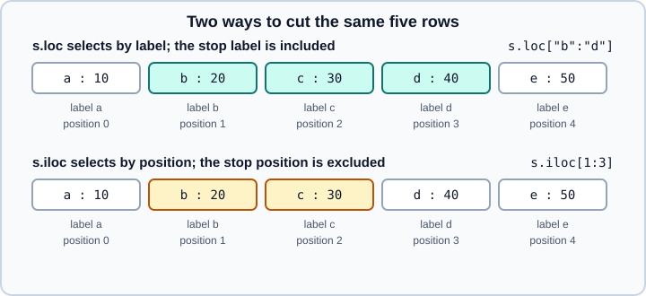

Indexing and Selecting
|
This content was generated with the assistance of AI and should be verified against the official documentation before being relied on in production. |
Selecting rows and columns is the operation you will write most often in pandas, and also the one with the most historical baggage. This page covers the selection tools of pandas 3.1 on Python 3.13 or 3.14, checked in October 2026. Every example was run on Python 3.13 with pandas 3.1.0 and the output shown is real. The ideas are the same in pandas 3.0; the few places where 3.1 differs are named.
The page assumes you know what a DataFrame and a Series are (see Series and DataFrame) and what an index is (see Index Objects). Selecting on several index levels is in MultiIndex, and the new expression-based helpers pd.col, DataFrame.select and DataFrame.filter are in pd.col, select and filter. The NumPy equivalent of this page is Basic Indexing and Advanced Indexing.
All examples use this small catalogue of books, with a string index so that labels and positions are easy to tell apart:
import numpy as np
import pandas as pd
df = pd.DataFrame(
{
"title": ["Dune", "Emma", "Ulysses", "Beloved", "Dracula"],
"year": [1965, 1815, 1922, 1987, 1897],
"pages": [412, 474, 730, 321, 418],
"rating": [4.3, 3.9, 3.7, 4.1, 3.8],
},
index=["a", "b", "c", "d", "e"],
)
print(df) title year pages rating
a Dune 1965 412 4.3
b Emma 1815 474 3.9
c Ulysses 1922 730 3.7
d Beloved 1987 321 4.1
e Dracula 1897 418 3.8The four accessors
pandas offers several ways to say "give me this part of the table". They differ in what the key means, and choosing the right one removes most surprises.
| Accessor | What the key means | Typical use |
|---|---|---|
|
A column label, a list of column labels, a row slice, or a boolean mask |
Quick column access and filtering |
|
Labels (and boolean masks, and callables) on the row and column axes |
The general-purpose selector and the only safe way to assign |
|
Integer positions, counted from zero, on each axis |
Position-based cuts: "the first three rows", "the last column" |
|
A single label pair or a single position pair |
Fast scalar read and write |
The most important difference is how a slice ends. loc slices by label and includes the stop label, because a set of labels has no natural "one past the last" position. iloc slices by position like a Python list, so the stop position is excluded.

Square brackets
Square brackets are the shortcut accessor. With a string they return a column as a Series; with a list they return a DataFrame with those columns in that order:
print(df["title"])
print(df[["title", "year"]])a Dune
b Emma
c Ulysses
d Beloved
e Dracula
Name: title, dtype: str
title year
a Dune 1965
b Emma 1815
c Ulysses 1922
d Beloved 1987
e Dracula 1897Note dtype: str. Since pandas 3.0 text columns use the dedicated str dtype instead of object; see Text Data and the str Dtype.
A slice inside square brackets selects rows, and a boolean Series of the same length selects the rows where it is True:
print(df["b":"d"]) # label slice, both ends included
print(df[1:3]) # position slice, stop excluded
print(df[df["year"] > 1900]) title year pages rating
b Emma 1815 474 3.9
c Ulysses 1922 730 3.7
d Beloved 1987 321 4.1
title year pages rating
b Emma 1815 474 3.9
c Ulysses 1922 730 3.7
title year pages rating
a Dune 1965 412 4.3
c Ulysses 1922 730 3.7
d Beloved 1987 321 4.1The brackets guess from the key type whether you mean rows or columns, which is exactly why the guess is a trap. df[1] raises KeyError: 1 (it is neither a column label nor a slice), df["b":"d"] slices rows, and df[["b", "d"]] looks for columns named b and d. Prefer loc and iloc, which always say which axis is meant, whenever the code will be read by someone else.
Two behaviours of older versions are gone. First, a Series with string labels no longer falls back to positions when a lookup by integer fails:
s2 = pd.Series([10, 20, 30], index=["x", "y", "z"])
for key in (0, -1):
try:
s2[key]
except KeyError as e:
print("KeyError", e)KeyError 0
KeyError -1Tutorials written for pandas 1.x show ser[-1] returning the last element of a string-indexed series. Use ser.iloc[-1]. Second, .ix (removed in pandas 1.0) and get_value or set_value (removed in 1.0) no longer exist; use loc, iloc, at and iat.
Selecting by label with loc
loc takes a row key and, optionally, a column key, separated by a comma. Each key can be a single label, a list of labels, a slice, a boolean array or a callable.
print(df.loc["b"]) # one row, returned as a Series
print(df.loc["b":"d", ["title", "pages"]])
print(df.loc["c", "pages"]) # one cell
print(df.loc[:, "year":"rating"].columns.tolist())title Emma
year 1815
pages 474
rating 3.9
Name: b, dtype: object
title pages
b Emma 474
c Ulysses 730
d Beloved 321
730
['year', 'pages', 'rating']A single row of mixed-type columns becomes an object Series, because a Series has one dtype. If you need to keep dtypes, select with a list (df.loc[["b"]]) so that the result stays a one-row DataFrame.
Boolean masks and callables
A boolean mask is the standard way to filter. Put it in the row position and name the columns you want in the column position:
print(df.loc[df["year"] > 1900, "title"])
print(df.loc[lambda d: d["rating"] > 4, ["title", "rating"]])a Dune
c Ulysses
d Beloved
Name: title, dtype: str
title rating
a Dune 4.3
d Beloved 4.1A callable receives the object being indexed and returns a key. It is what makes selection work in the middle of a method chain, where the intermediate DataFrame has no name. In pandas 3.1 you can write the same thing with a deferred column expression, df.loc[pd.col("year") > 1900], which is described in pd.col, select and filter.
Missing labels and alignment
A list of labels that contains an unknown label raises KeyError. Use reindex to get missing rows as NaN, or intersect first to drop them:
try:
df.loc[["a", "zz"]]
except KeyError as e:
print("KeyError", e)
print(df.reindex(["a", "zz"]))
print(df.loc[df.index.intersection(["a", "zz"])])KeyError "['zz'] not in index"
title year pages rating
a Dune 1965.0 412.0 4.3
zz NaN NaN NaN NaN
title year pages rating
a Dune 1965 412 4.3Source: pandas API: DataFrame.reindex
Note that reindex turned the integer columns into floats to hold NaN; see Nullable Integer and Boolean for dtypes that avoid this.
A boolean Series used as a mask is aligned on the index, not on position. A mask with the same labels in a different order works; a mask that does not cover the labels raises:
mask = pd.Series([True, False, True], index=list("abc"))
try:
df.loc[mask]
except Exception as e:
print(type(e).__name__, "|", e)
print(df.loc[mask.reindex(df.index, fill_value=False)])IndexingError | Unalignable boolean Series provided as indexer (index of the boolean Series and of the indexed object do not match).
title year pages rating
a Dune 1965 412 4.3
c Ulysses 1922 730 3.7Source: pandas API: DataFrame.reindex
A boolean array that is not a Series (a NumPy array or a list) is matched by position and must have exactly one entry per row; otherwise IndexError: Boolean index has wrong length is raised.
Label slices need a sortable index, or existing labels
loc slicing on a monotonic (sorted) index works even when the end points are absent, because pandas can find where they would sit. On a non-monotonic index both end labels must exist, otherwise the result would depend on arbitrary ordering:
t = pd.Series(range(5), index=list("badce"))
print(t.loc["b":"c"]) # both labels exist: positional order b a d c
try:
t.loc["b":"zz"]
except KeyError as e:
print("KeyError", e)b 0
a 1
d 2
c 3
dtype: int64
KeyError "Cannot get right slice bound for non-monotonic index with a missing label 'zz'. Either sort the index or specify an existing label."Selecting by position with iloc
iloc takes integers, lists of integers, slices, boolean arrays or callables, always as positions starting from zero. Negative positions count from the end.
print(df.iloc[0]) # first row
print(df.iloc[-1]) # last row
print(df.iloc[1:3, [0, 2]]) # rows 1 and 2, columns 0 and 2
print(df.iloc[[0, 2, 4], :2])
print(df.iloc[[True, False, True, False, False]])title Dune
year 1965
pages 412
rating 4.3
Name: a, dtype: object
title Dracula
year 1897
pages 418
rating 3.8
Name: e, dtype: object
title pages
b Emma 474
c Ulysses 730
title year
a Dune 1965
c Ulysses 1922
e Dracula 1897
title year pages rating
a Dune 1965 412 4.3
c Ulysses 1922 730 3.7iloc refuses a boolean Series because a Series carries labels that iloc would have to ignore. Convert it with to_numpy() first and make sure its length equals the number of rows:
try:
df.iloc[mask]
except ValueError as e:
print("ValueError |", e)ValueError | iLocation based boolean indexing cannot use an indexable as a maskAn out-of-range position raises IndexError, and iloc never enlarges its target: s.iloc[5] = 9 on a series with fewer than six elements raises IndexError: iloc cannot enlarge its target object.
Fast scalar access with at and iat
at and iat read or write exactly one cell and skip the overhead of building an intermediate object. Use them in loops that touch single cells; for anything vectorised, prefer loc with masks.
print(df.at["c", "pages"], df.iat[2, 2])
d = df.copy()
d.iloc[0, 2] = 400
d.at["b", "pages"] = 470
d.iat[2, 3] = 3.6
print(d)730 730
title year pages rating
a Dune 1965 400 4.3
b Emma 1815 470 3.9
c Ulysses 1922 730 3.6
d Beloved 1987 321 4.1
e Dracula 1897 418 3.8Source: pandas API: DataFrame.at
The integer-label trap
When the index itself is made of integers, labels and positions look alike, and [] behaves differently for scalars and for slices. Here the labels are 3, 2, 1 in that order:
s = pd.Series([10, 20, 30], index=[3, 2, 1])
print(s[1], s.loc[1], s.iloc[1]) # scalar key: label 1 is the third element
print(s.loc[1:3]) # label slice from 1 to 3 on a non-sorted index
print(s.iloc[1:3])30 30 20
Series([], dtype: int64)
2 20
1 30
dtype: int64s[1] returned the element with label 1, but s.loc[1:3] is empty: label 1 comes after label 3 in this index, so the slice runs backwards over nothing. In a RangeIndex the same ideas show up as the classic off-by-one:
r = pd.DataFrame({"v": [5, 6, 7, 8]})
print(r[1:3]) # positions 1, 2
print(r.loc[1:3]) # labels 1, 2, 3
print(r.iloc[1:3]) # positions 1, 2 v
1 6
2 7
v
1 6
2 7
3 8
v
1 6
2 7The rule of thumb: use loc when you mean labels, iloc when you mean positions, and avoid [] for anything but column selection and simple boolean masks.
Boolean logic
Combine conditions with & (and), | (or) and ~ (not). Python’s and, or and not do not work element-wise on a Series and raise ValueError: The truth value of a Series is ambiguous. Because & binds tighter than comparison operators, every comparison needs its own parentheses:
print(df[(df["year"] > 1900) & (df["pages"] < 500)])
print(df[~df["title"].isin(["Dune", "Emma"])])
print(df[df["year"].between(1890, 1930)]) title year pages rating
a Dune 1965 412 4.3
d Beloved 1987 321 4.1
title year pages rating
c Ulysses 1922 730 3.7
d Beloved 1987 321 4.1
e Dracula 1897 418 3.8
title year pages rating
c Ulysses 1922 730 3.7
e Dracula 1897 418 3.8between is inclusive on both ends by default; pass inclusive="left", "right" or "neither" to change that. isin accepts a list, set or Series; on a DataFrame it tests every cell.
query
DataFrame.query takes a boolean expression as a string. It reads well in a method chain and refers to outer Python variables with @:
print(df.query("year > 1900 and rating >= 4"))
thr = 1900
print(df.query("year > @thr")) title year pages rating
a Dune 1965 412 4.3
d Beloved 1987 321 4.1
title year pages rating
a Dune 1965 412 4.3
c Ulysses 1922 730 3.7
d Beloved 1987 321 4.1Source: pandas API: DataFrame.query
Column names with spaces need backticks inside the string, and query is evaluated by DataFrame.eval, which only pays off above roughly 100,000 rows; for small frames it is slower than a plain mask. The inplace= argument of query and eval is deprecated in pandas 3.1, so always use the returned object.
where, mask and missing values
where keeps the values where the condition is true and replaces the rest (with NaN by default); mask is the opposite. Unlike boolean indexing they keep the shape of the original:
nums = df[["year", "pages"]]
print(nums.where(df["year"] > 1900))
print(nums.where(df["year"] > 1900, 0))
print(nums.mask(df["year"] > 1900, -1)) year pages
a 1965.0 412.0
b NaN NaN
c 1922.0 730.0
d 1987.0 321.0
e NaN NaN
year pages
a 1965 412
b 0 0
c 1922 730
d 1987 321
e 0 0
year pages
a -1 -1
b 1815 474
c -1 -1
d -1 -1
e 1897 418A mask with missing values is only allowed with the nullable boolean dtype, where NA is treated as False when selecting with loc or []. DataFrame.filter(cond=..., na=...) makes that choice explicit in pandas 3.1; see pd.col, select and filter.
Setting values
All the accessors above can be assigned to. Use loc with a row key and a column key in a single call:
d2 = df.copy()
d2.loc["a", "rating"] = 4.5 # one cell
d2.loc[d2["year"] < 1900, "rating"] += 0.1 # masked update
d2.loc[:, "rating"] = d2["rating"].round(1)
d2.loc["f"] = ["Hamlet", 1603, 342, 4.0] # enlarge with a new row label
d2["decade"] = d2["year"] // 10 * 10 # enlarge with a new column
print(d2) title year pages rating decade
a Dune 1965 412 4.5 1960
b Emma 1815 474 4.0 1810
c Ulysses 1922 730 3.7 1920
d Beloved 1987 321 4.1 1980
e Dracula 1897 418 3.9 1890
f Hamlet 1603 342 4.0 1600Source: pandas user guide: Copy-on-Write (the page redirects to the migration guide, Migration guide for the new string dtype and Copy-on-Write)
Assigning to a label that does not exist (loc) or a new column name ([]) enlarges the frame; iloc never does. Appending rows one at a time this way copies the data every time, so for many rows collect them in a list and build the frame once, as shown in Concatenation.
Chained assignment never works
Since pandas 3.0, Copy-on-Write is the only behaviour: any DataFrame or Series derived from another by indexing behaves as an independent copy, and writing to it never changes the parent. The consequence is that chained assignment, which selects twice and assigns to the result of the first selection, silently updates a temporary:
import warnings
d3 = df.copy()
with warnings.catch_warnings(record=True) as w:
warnings.simplefilter("always")
d3["rating"][d3["year"] > 1900] = 0.0 # chained: selects a column, then assigns
print([x.category.__name__ for x in w])
print(d3["rating"].tolist()) # unchanged
d3.loc[d3["year"] > 1900, "rating"] = 0.0 # one call: works
print(d3["rating"].tolist())['ChainedAssignmentError']
[4.3, 3.9, 3.7, 4.1, 3.8]
[0.0, 3.9, 0.0, 0.0, 3.8]Source: pandas API: DataFrame.loc
ChainedAssignmentError is a warning, not an exception, so a script keeps running with unchanged data. SettingWithCopyWarning no longer exists. The same rule explains why changing a subset leaves the original alone:
sub = df.loc[["a", "b"]]
sub.loc["a", "year"] = 0
print(df.loc["a", "year"]) # still 19651965Source: pandas user guide: Copy-on-Write (the page redirects to the migration guide, Migration guide for the new string dtype and Copy-on-Write)
The array returned by to_numpy() on a selection can be a read-only view, so assigning into it can raise ValueError: assignment destination is read-only; call .copy() first if you need to modify it. The mechanics of Copy-on-Write, including how copies are deferred, are in Copy-on-Write.
Assigning a different dtype
pandas 3 no longer silently upcasts when a value does not fit the column dtype (PDEP-6). Assigning a float to an integer column raises instead of turning the whole column into floats:
d4 = df.copy()
try:
d4.loc["a", "pages"] = 412.5
except TypeError as e:
print("TypeError |", e)
d4["pages"] = d4["pages"].astype("float64") # change the dtype explicitly first
d4.loc["a", "pages"] = 412.5TypeError | Invalid value '412.5' for dtype 'int64'Source: pandas user guide: Copy-on-Write (the page redirects to the migration guide, Migration guide for the new string dtype and Copy-on-Write)
Selecting columns by name pattern or dtype
select_dtypes picks columns by dtype. Since text is now str, ask for it explicitly rather than for object:
print(df.select_dtypes(include="number").columns.tolist())
print(df.select_dtypes(include="str").columns.tolist())
print(df.select_dtypes(exclude="number").columns.tolist())['year', 'pages', 'rating']
['title']
['title']For name patterns use a boolean array over the column index inside loc:
print(df.loc[:, df.columns.str.contains("a")].columns.tolist())
print(df.loc[:, ~df.columns.isin(["title"])].columns.tolist())['year', 'pages', 'rating']
['year', 'pages', 'rating']pandas 3.1 adds DataFrame.select, which is a clearer way to pick and compute columns, and a DataFrame.filter that accepts a mask; both are in pd.col, select and filter.
Removing, inserting and extracting
print(d.drop(index=["a"], columns=["rating"]))
try:
d.drop(index=["zz"])
except KeyError as e:
print("KeyError |", e)
print(d.drop(index=["zz"], errors="ignore").shape)
e = d.copy()
e.insert(1, "genre", ["SF", "Novel", "Modernist", "Gothic", "Horror"])
print(e.columns.tolist())
genre = e.pop("genre") # removes the column and returns it
print(genre.tolist(), e.columns.tolist()) title year pages
b Emma 1815 470
c Ulysses 1922 730
d Beloved 1987 321
e Dracula 1897 418
KeyError | "['zz'] not found in axis"
(5, 4)
['title', 'genre', 'year', 'pages', 'rating']
['SF', 'Novel', 'Modernist', 'Gothic', 'Horror'] ['title', 'year', 'pages', 'rating']drop(..., inplace=True) is deprecated in pandas 3.1 (the same applies to rename, reset_index, set_index, dropna, drop_duplicates, sort_values, sort_index, eval and query) and emits a Pandas4Warning. Reassign the result instead: df = df.drop(columns="x"). It was never faster, since most inplace operations made a copy internally.
Source: pandas API: DataFrame.drop
Other selection helpers worth knowing:
print(df.get("nope", "default")) # like dict.get
print(df.take([0, 2])) # positional rows, like iloc[[0, 2]]
print(df.xs("c")) # cross-section of one row label
print(df["pages"].idxmax(), df.loc[df["pages"].idxmax(), "title"])
print(df.nlargest(2, "pages")[["title", "pages"]])
print(df.sample(2, random_state=0).index.tolist())
print(df.head(2).index.tolist(), df.tail(1).index.tolist())default
title year pages rating
a Dune 1965 412 4.3
c Ulysses 1922 730 3.7
title Ulysses
year 1922
pages 730
rating 3.7
Name: c, dtype: object
c Ulysses
title pages
c Ulysses 730
b Emma 474
['c', 'a']
['a', 'b'] ['e']Source: pandas API: DataFrame.xs
Duplicate labels
An index may contain repeated labels. loc then returns every match, a Series for a repeated label in a Series, and a single scalar for a unique one:
dup = pd.Series([1, 2, 3], index=["x", "x", "y"])
print(dup.loc["x"])
print(dup.loc["y"])x 1
x 2
dtype: int64
3Code that expects a scalar can then receive a Series. Detecting and preventing duplicates (allows_duplicate_labels) is covered in Duplicate Labels and Rows.
Which older advice no longer applies
| Older tutorial or book says | Today | Since |
|---|---|---|
Use |
Removed; use |
1.0 (2020) |
|
Raises |
3.0 |
|
Removed; use |
1.0 |
|
Never updates; emits |
3.0 |
|
Deprecated; reassign the result |
3.1 |
Assigning |
Raises |
3.0 |
Check |
Text is |
3.0 |
|
Removed in 2.0; collect frames and call |
2.0 |
The full list of changes between 2.x and 3.x is in What’s New in 3.x and Migrating.
Pitfalls summary
-
Use
locfor labels andilocfor positions; avoiddf[...]for anything but columns and simple masks. -
Remember that label slices include the stop label and position slices do not.
-
Put every comparison in parentheses when combining masks with
&,|and~. -
Assign with a single
loc[rows, cols] = value; never chaindf[a][b] = value. -
Boolean
Seriesmasks align on labels, arrays align on position;ilocaccepts only arrays. -
Integer labels make
[]ambiguous; sort the index (sort_index) before label slicing on it. -
Do not rely on
inplace=; reassign.
References
-
pandas user guide, Indexing and selecting data: https://pandas.pydata.org/docs/user_guide/indexing.html
-
pandas user guide, Copy-on-Write and migration guide: https://pandas.pydata.org/docs/user_guide/migration.html
-
DataFrame.loc: https://pandas.pydata.org/docs/reference/api/pandas.DataFrame.loc.html -
DataFrame.iloc: https://pandas.pydata.org/docs/reference/api/pandas.DataFrame.iloc.html -
DataFrame.query: https://pandas.pydata.org/docs/reference/api/pandas.DataFrame.query.html -
DataFrame.where: https://pandas.pydata.org/docs/reference/api/pandas.DataFrame.where.html -
DataFrame.select_dtypes: https://pandas.pydata.org/docs/reference/api/pandas.DataFrame.select_dtypes.html -
pandas 3.0.0 release notes: https://pandas.pydata.org/docs/whatsnew/v3.0.0.html
-
pandas 3.1.0 release notes: https://pandas.pydata.org/docs/whatsnew/v3.1.0.html